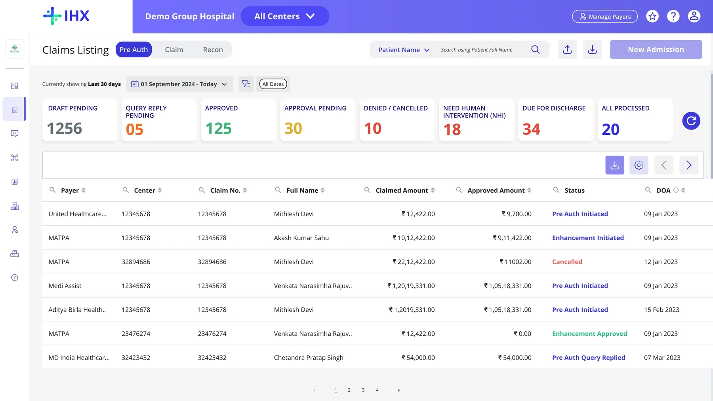
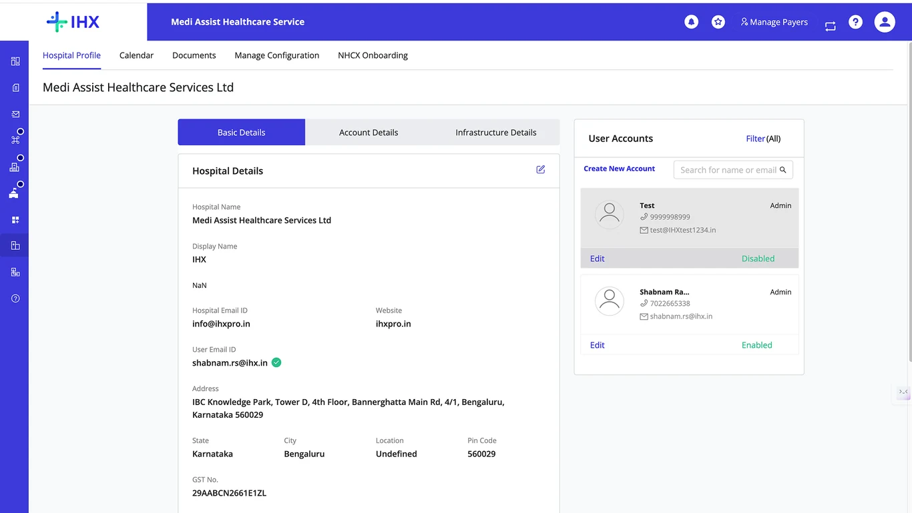
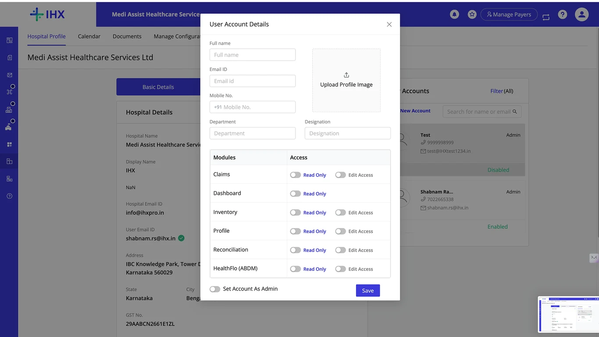
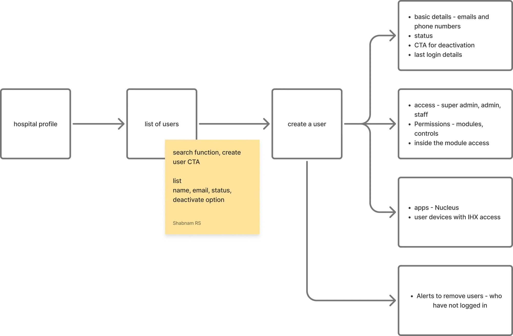
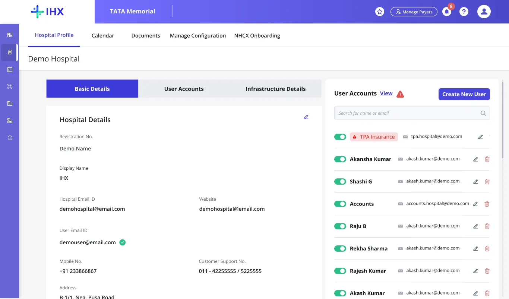
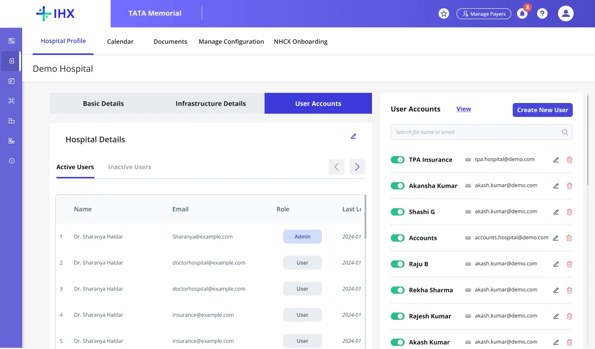
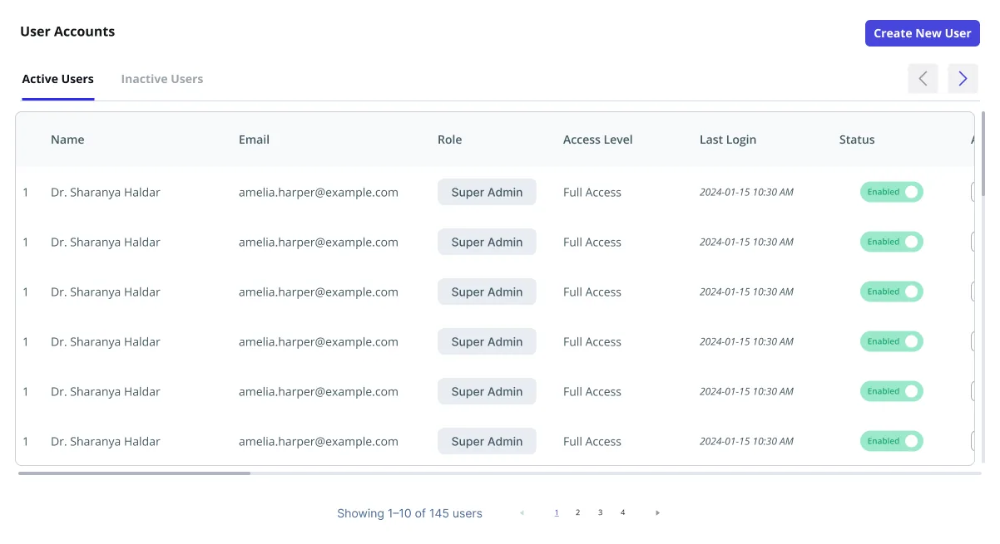

87% of support tickets were for a feature users never found
01 The incident
1 · They leave the organization
Insurance desk staff
Enterprise hospital
EmployedLeft the organization
No one owned revoking their access
2 · They ask for logins
Email to IHX Support
From: a personal email address
Subject: Need new logins, urgent
Hi team, please create new logins for our insurance desk.
IHX Support replies
Done. New logins created.
3 · They log back in

Cancelled Cancelled Cancelled Cancelled Cancelled 1502 The core problem
The module existed, but it did not solve the problem.
Hospital admin
needs a user deactivated
to their account manager
Account manager
forwards it to DB support
DB support
an engineer flips a flag
No time limit
and no one owned it end to end

Meanwhile
A self-serve user panel already existed, squeezed into Hospital Profile. Admins never found it.
Support load
80
tickets a day. About 50 new users and 30 password resets.
Group hospitals
03 Research
What I didI traced the problem from the 2FA rollout: login issues and pushback, a focus group with the AM team, calls with hospital IT teams, and the customer support inbox.
Account admin
“I did not know user management was even a page in this product.”
Finding · Group control
A group admin could see every center, but act on no user in any of them.
Finding · Revocation
Deactivation was so slow that most hospitals gave up partway. Accounts stayed live.
Hospital IT
calls with the teams who manage logins
AM team
focus group with account managers
2FA rollout
login issues surfaced during the rollout
Inbox
analysis of the support ticket inbox
04 UX audit of the existing module
What I didI audited the existing module. Most of the friction sat in three screens: the hospital profile, the modal to create or edit a user, and group login.
Visibility
Users squeezed into a side panel. No count, no roles at a glance.
Findability
Adding a user hides behind a small text link.
Mental model
Account Details held one payer’s bank details. Staff assumed insurers got the update.
Clutter
Four tabs. Infrastructure went unused.

5 6 7Clutter
A profile picture upload nobody used.
Match to product
Six flat buckets, one Read Only or Edit toggle each. Claims is one bucket.
Control
Admin is a single on/off switch. No hierarchy.
Efficiency
Group logins re-pick the center in every module. No group-level user management.
Scalability
Missing key features
05 The insight
A support volume problem is often a discoverability and trust problem, with a solution that already exists.
Principle
Self-serve over process
Admins act in the product, not over email.
Principle
Locked, not hidden
Unpaid modules stay visible, so users learn they exist.
Principle
Built for enterprise and single-center hospitals
A Group Admin manages every center in a chain. A Center Admin manages a single center.
06 Problem to solution
What I didI worked out the role hierarchy with the PM.
Security
Who can get in, and for how long
Verification
Logins created over email, never verified
Solution
Admins create users in-product, sign-in by OTP
Revocation
Deactivation took 4 email steps, no owner
Solution
4-week inactive flag, 1-step deactivate, delete in Actions
User access
Who controls access, at what level
Group hospitals
Could see every center, manage no user
Solution
Group Admin role and an All Centers switcher
Engineering dependency
SSO, 2FA and roles needed a DB flag
Solution
SSO per user, permissions per module, set by the admin
Ease of use
Can admins find it and do it themselves
Discoverability
User panel buried in Hospital Profile
Solution
A real user table with one Create New User button
07 High-level task flow and iterations
A high-level task flow follows one job on a short path: the key screens and actions, without every branch a full user flow would map. I created it to understand the tasks, how a user would perform them, and what comes under each action.
What I didI used this flow to decide the key actions and features inside the user module, and the order they come in.

What I didI tried these before landing on the user management table. In feedback sessions, engineering gave the go-ahead to build new tabs and break away from the side panel in the hospital profile. PM and engineering both had to agree to it.



08 High-fidelity design and prototype
What I didI owned it end to end, from discovery and the problem statement to the go-ahead from the BU head, the PRD, design, review and go-live.
09 Trade-offs and constraints
Constraint
3 weeks, with 1 PM, 1 designer and 3 developers.
Scope change
Scope grew from single-center admins to Group Admins, inside the same 3 weeks.
Kept for v1
IHX Ops still creates the first Group Admin. Every step after is self-serve.
Next time
Design the role hierarchy for the largest account first.
10 Impact
87%
80 a day down to 10. Hospitals turned SSO on 429 times themselves.
~2,100
fewer tickets every month
30 → 5 min
to create a user, now self-serve
4 → 1
steps to deactivate, done by the admin
415
users created in-product in two months
Shabnam Raghavan, Product designer
Read the detailed case studyOpen to product design roles and contract work.
Download resume